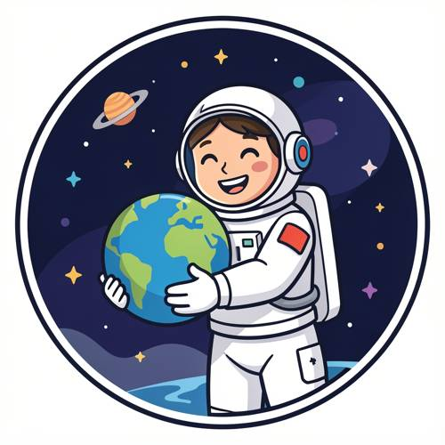
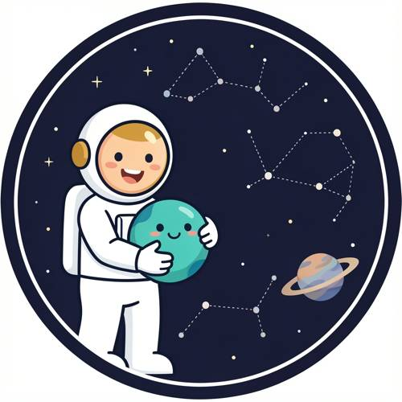
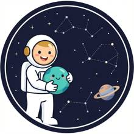

Entity Layout — A flat-style badge design shows a happy astronaut hugging a small plan
A flat-style badge design shows a happy astronaut hugging a small planet on the left. They all smile and the background is the deep universe.

Direct — one call, no iteration

Continuum — Kimi K3 + FLUX.2-klein-9B
Judge — Direct
FAILEntity Layout - Two-Dimensional Space — The image shows an astronaut hugging a planet, but this subject is positioned in the center of the circular frame, not on the left.
PASSStyle — The image is presented as a circular illustration with flat colors and bold outlines, which is consistent with the description of a 'flat-style badge design'.
FAILGrammar - Consistency — The astronaut is depicted with a smiling expression, but the planet does not have a face or a smile.
PASSAction - Contact Interaction — The astronaut is shown with their arms wrapped around the planet, holding it close to their chest in a clear depiction of a hug.
PASSAttribute - Expression — The astronaut's face is visible inside the helmet and features closed, upturned eyes and a wide, open-mouthed smile, indicating a happy expression.
Judge — Continuum
PASSEntity Layout - Two-Dimensional Space — An astronaut in a white suit is positioned on the left side of the circular frame, holding a small, anthropomorphized planet.
PASSStyle — The image is rendered in a flat-style with bold black outlines, simple shapes, and solid colors. It is contained within a thick, dark circular border, consistent with a badge design.
PASSGrammar - Consistency — Both the astronaut and the small planet have smiling faces. The astronaut has an open-mouthed smile, and the planet has a curved line for a smile.
PASSAction - Contact Interaction — The astronaut has their arms wrapped around the small, teal-colored planet, holding it close to their chest in a hugging gesture.
PASSAttribute - Expression — The astronaut has wide eyes, rosy cheeks, and a broad, open-mouthed smile, clearly depicting a happy expression.
What the agent did
Thinking
We need respond to user likely wants image generation for prompt. Must use tools per benchmark policy: always flux2-klein generation and editing, no seed/steps/guidance. Need generate then inspect then edit until matches. Need mark best. Need understand prompt: "A flat-style badge design shows a happy astronaut hugging a small planet on the left. They all smile and the background is the deep universe." We need produce image. Need maybe note flat-style badge, happy astronaut hugging small planet on left, all smile (astronaut and planet maybe faces), background deep universe. Need generate. We can call generate_image. Since image size fixed? User didn't specify; default 1024 square likely okay. Need maybe flat vector badge with circular badge? "badge design" implies emblem/sticker, maybe circular border. Need include deep universe background inside badge, stars. Happy astronaut on left hugging small planet; both smiling. Let's generate with detailed visual prompt. Use flux2-klein. Then inspect. Let's call generate_image. Ensure no seed/steps/guidance. Model flux2-klein. Prompt concrete. Maybe include "flat vector illustration, circular badge with thick dark border, deep space navy background with stars and tiny planets, on the left a cheerful astronaut in white spacesuit with gold visor hugging a small smiling teal planet, planet has cute face, astronaut smiling, simple geometric shapes, clean sticker style, soft highlights, centered composition". Need perhaps "small planet on the left" Wait phrase: "hugging a small planet on the left" Could mean astronaut hugging a small planet; planet on the left? Or astronaut on left? It says "shows a happy astronaut hugging a small planet on the left. They all smile" likely astronaut and planet are on left side of badge? Need interpret: astronaut hugging small planet, positioned left. They all smile. We'll compose astronaut left of planet? Hmm "hugging a small planet on the left" modifies small planet on left? If astronaut hugs planet, planet could be to astronaut's left (image left). But then astronaut would be right of planet, contradicts "astronaut ... on the left". Maybe "astronaut hugging a small planet" on the left side of design. Let's place pair on left half, astronaut slightly left, planet in arms to right? "on the left" likely entire motif left, background universe. We'll generate with pair on left, negative space stars on right. Need maybe all smile: astronaut face visible with smile, planet with smile. Need maybe avoid text. Good. Need inspect image after generate. Since generated image inline maybe visible to model? In this environment, tool returns inline image bytes; as assistant can see? It will be in conversation maybe. Need use inspect_region for details perhaps. Let's generate first.
Step 1 — `generate_image`
{
"model": "flux2-klein",
"prompt": "Flat vector badge design, circular sticker emblem with a thick dark navy outline. Inside the badge is the deep universe: dark indigo space with tiny stars, small dotted constellations, and a few distant planets. On the left half of the badge, a happy astronaut in a simple white spacesuit with a round gold visor is hugging a small cute teal planet. Both the astronaut and the small planet have smiling faces; the astronaut\u2019s visible face beams with joy, and the planet has a little curved smile and dot eyes. Clean geometric flat shapes, bold outlines, minimal shading, cheerful sticker style, balanced composition with open starry space on the right."
}
Result img_0

Thinking
We have generated image shown. Need inspect. It looks quite good: circular badge flat style, astronaut on left, smiling, hugging teal smiling planet. Deep universe background with constellations, stars, ring planet. Need check prompt exact: "small planet on the left" Here astronaut is left and planet to his right/center-left; pair on left. "They all smile" astronaut and planet smile; ring planet no face okay. Maybe image satisfies. Need maybe mark_best. Need maybe inspect text? No text requested. Need decide if edits needed. Potential issue: "small planet on the left" could mean planet should be on left of astronaut; in image planet is in center and astronaut left. But phrase more likely motif left. It is good. Need perhaps mark best now. If want improve? Maybe astronaut's right hand glove on right side of planet appears floating white hand (looks like disembodied mitten) but acceptable as hugging arm behind. Could edit? Risk. Good enough is stop. Need mark_best img_0. Then final brief. Ensure last action mark. Call mark_best. Then final concise mention. We can call mark_best now.
Step 2 — `mark_best`
{
"image": "img_0",
"reason": "Matches the prompt: flat circular badge, deep-universe background, happy astronaut on the left hugging a small smiling planet, both smiling, clean sticker style."
}
Thinking
Need final response. Mention generated and marked. Since user asked prompt, likely just output image? We have tool inline maybe enough. Final concise: "Done — the marked image..." No extra details maybe. Ensure not claim unsupported. Final with maybe "Created the flat-style badge..." Good.
Model
Done — created a flat-style circular badge with a smiling astronaut on the left hugging a cute smiling planet, set against a deep starry universe.